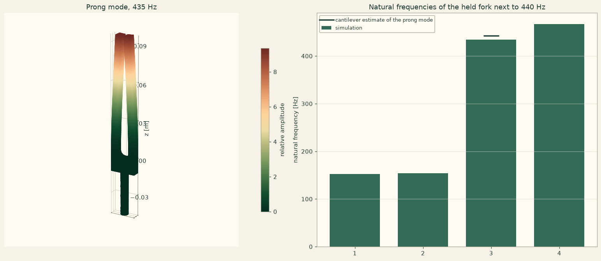
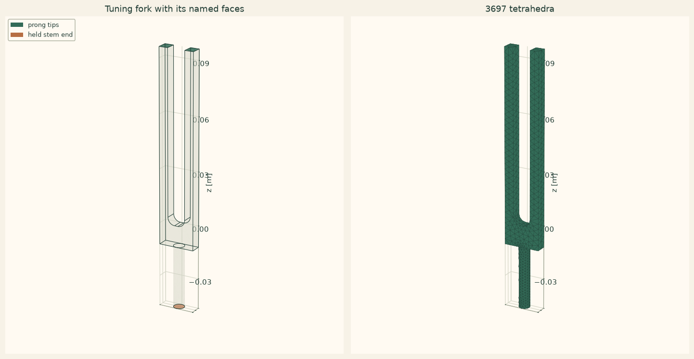

Docs › Examples › Tuning fork: the 440 Hz prong mode
Structural dynamics · 3D
Tuning fork: the 440 Hz prong mode
A steel tuning fork whose prongs were sized with beam theory for concert pitch A, held at its stem.
Run locally with OneSimulation. The example downloads are free. Running them requires an activated runtime. Runtime Alpha 0.2.1a7 · CPython 3.13 on macOS (Apple Silicon), Ubuntu 22.04 (x86-64), and Windows x64. Installation and activation · View pilot plans. Scope of the reference checks.


What it computes
OneSimulation meshes the fork from the STEP file with quadratic tetrahedra, assembles stiffness and mass and solves the natural modes closest to 440 Hz with a sparse shift-invert eigensolver; the prong mode is picked out by the opposite motion of the two prong tips. The script that builds the STEP file comes with the notebook.
What it checks
The prong mode sounds at 434.6 Hz (4 mm and 3 mm meshes agree within 0.02 %), 1.8 % below the cantilever estimate of 442.4 Hz, because the bridge between the prongs is not rigid.
Geometry
The notebook starts at the import of the CAD file tuning_fork_440_hz.step: STEP (AP242), readable by any CAD program, with the names of the faces that the boundary conditions use. Put it next to the notebook.


The geometry script
The script tuning_fork_440_hz_geometry.py builds the geometry with the CAD objects of OneSimulation and writes the file. Change a dimension there, run it, and run the notebook again.
"""Geometry of the OneSimulation example "Tuning fork: the 440 Hz prong mode".
Builds a steel tuning fork with the CAD objects of OneSimulation: two prongs 5 mm x 6 mm in
cross-section and 96 mm long (the length beam theory gives for 440 Hz), 10 mm apart, joined by a
bridge 12 mm high with a U-shaped inner fillet of 4 mm radius, and a round stem 6 mm in diameter and 35 mm long. Writes
tuning_fork_440_hz.step with the face groups tips (the free ends of the prongs) and stem_end (the
lower end of the stem, where the fork is held).
"""
from onesim.cad.d3 import Box, Cylinder
prong, width, length, gap, bridge, fillet = 0.005, 0.006, 0.096, 0.010, 0.012, 0.004
stem_radius, stem_length = 0.003, 0.035
outer = gap / 2 + prong
fork = Box(
length=2 * outer,
width=width,
height=bridge + length,
origin=(-outer, -width / 2, -bridge),
) - Box(length=gap, width=width, height=length, origin=(-gap / 2, -width / 2, 0.0))
fork = fork.fillet(
fillet,
edges=fork.select(
edges=lambda edge: abs(edge.start[2]) < 1e-9
and abs(edge.end[2]) < 1e-9
and abs(abs(edge.start[0]) - gap / 2) < 1e-9
and abs(edge.start[0] - edge.end[0]) < 1e-9
),
)
fork = fork | Cylinder(
radius=stem_radius,
length=stem_length + 0.001,
origin=(0.0, 0.0, -bridge - stem_length),
axis=(0.0, 0.0, 1.0),
)
fork = fork.grouped(
tips=fork.select(faces=lambda face: abs(face.center[2] - length) < 1e-9),
stem_end=fork.select(
faces=lambda face: abs(face.center[2] + bridge + stem_length) < 1e-9
),
)
fork.save("tuning_fork_440_hz.step")The notebook
The complete notebook, cell by cell. Run it to produce the figures and the comparison printout.
A tuning fork sounds in its prong mode: the two prongs swing towards and away from each other in the plane of the fork, so the forces at the bridge cancel and the stem barely moves. Treating each prong as a cantilever of length \(L\) and thickness \(h\) in the direction of motion, clamped at the bottom of the gap, gives the classical estimate
For steel (\(E=200\) GPa, \(\rho=7850\) kg/m³) and \(h=5\) mm the estimate gives 440 Hz for \(L=96.3\) mm, and the prongs of this fork are 96 mm long. The real prongs, however, are not clamped: the bridge and the U-shaped bend between them flex as well, and the fork sounds lower. The fork is held at the lower end of its stem.
The fork comes from the CAD file tuning_fork_440_hz.step with the face groups tips and stem_end; the script tuning_fork_440_hz_geometry.py builds it with the CAD objects of OneSimulation.
Reference. T. D. Rossing, F. R. Moore and P. A. Wheeler, The Science of Sound, 3rd ed., Addison-Wesley (2002), Sec. 13.4 (tuning forks); the cantilever factor \(\beta_1\) from W. Weaver, S. P. Timoshenko and D. H. Young, Vibration Problems in Engineering, 5th ed., Wiley (1990), Sec. 5.3.
import numpy as np
from onesim.cad.exchange import load
from onesim.materials import IsotropicSolid
from onesim.meshing import TetrahedralMesher
from onesim.numerics import Numerics
from onesim.numerics.fem import FiniteElement, Lagrange
from onesim.numerics.linear import SparseDirect, SparseSymmetricEigenSolver
from onesim.physics.solid_mechanics import (
FixedDisplacement,
LinearElasticity,
TractionFree,
structural_modes,
)
from onesim.simulation import Problem, Simulation
from onesim.visualization import plots, theme
theme.set()Geometry and mesh
Two meshes of quadratic tetrahedra with cells of 4 mm and 3 mm.
fork = load("tuning_fork_440_hz.step")
faces = fork.boundaries
sizes = [0.004, 0.003]
meshes = [TetrahedralMesher(target_size=size).generate(fork) for size in sizes]
view = plots.Camera(elevation=20, azimuth=-60, distance=1.25)
fig = plots.figure(1, 2, size=(13, 7))
plots.geometry(
fork,
selection={"prong tips": faces.tips, "held stem end": faces.stem_end},
labels=False,
camera=view,
title="Tuning fork with its named faces",
ax=fig[0],
)
plots.mesh(
meshes[-1],
groups=("all",),
legend=False,
camera=view,
title=f"{meshes[-1].cell_count} tetrahedra",
ax=fig[1],
)
plots.show()Model
The stem end is clamped; the modal analysis solves \(K\boldsymbol\phi=\omega^2M\boldsymbol\phi\) with a sparse shift-invert eigen solve for the four modes closest to 440 Hz on each mesh.
youngs_modulus, density, prong, length = 200e9, 7850.0, 0.005, 0.096
steel = IsotropicSolid(
density=density,
specific_heat_capacity=460.0,
thermal_conductivity=50.0,
youngs_modulus=youngs_modulus,
poisson_ratio=0.29,
thermal_expansion_coefficient=12e-6,
)
model = LinearElasticity(domain=fork.volume, material=steel)
problem = Problem(
name="Tuning fork",
geometry=fork,
physics=(model,),
boundary_conditions=(
FixedDisplacement(
boundary=faces.stem_end, physics=model, value=(0.0, 0.0, 0.0)
),
TractionFree(boundary=faces.all - faces.stem_end, physics=model),
),
)
numerics = Numerics(
spatial=FiniteElement(element=Lagrange(order=2)), linear_solver=SparseDirect()
)
results = [
Simulation(problem=problem, mesh=mesh, numerics=numerics).solve_stationary()
for mesh in meshes
]
modes = [
structural_modes(
result,
model,
mode_count=4,
target_frequency=440.0,
eigensolver=SparseSymmetricEigenSolver(tolerance=1e-10),
)
for result in results
]Results
The prong mode is the one in which the two prong tips move furthest apart along \(x\), the direction of the prong thickness.
coordinates = [
np.asarray(result.operators[model.model_id].space.dof_coordinates)
for result in results
]
spreads = [
[
abs(
mode_set.mode_displacements(i)[
(nodes[:, 2] > length - 1e-6) & (nodes[:, 0] > 0), 0
].mean()
- mode_set.mode_displacements(i)[
(nodes[:, 2] > length - 1e-6) & (nodes[:, 0] < 0), 0
].mean()
)
for i in range(mode_set.mode_count)
]
for mode_set, nodes in zip(modes, coordinates)
]
frequencies = [
mode_set.frequencies[int(np.argmax(spread))]
for mode_set, spread in zip(modes, spreads)
]
spread, prong_mode = spreads[-1], int(np.argmax(spreads[-1]))
estimate = (
1.8751**2
/ (2 * np.pi)
* prong
/ length**2
* np.sqrt(youngs_modulus / (12 * density))
)
print("mode frequency [Hz] tip spread along x")
for i, (frequency, motion) in enumerate(zip(modes[-1].frequencies, spread), start=1):
print(
f"{i:4d} {frequency:16.1f} {motion / max(spread):18.3f}"
+ (" <- prong mode" if i - 1 == prong_mode else "")
)
print(
f"prong mode: {frequencies[0]:.1f} Hz on the 4 mm mesh, {frequencies[1]:.1f} Hz on the 3 mm mesh "
f"(change {100 * (frequencies[1] / frequencies[0] - 1):+.2f} %)"
)
print(
f"cantilever estimate {estimate:.1f} Hz: the fork sounds {100 * (1 - frequencies[-1] / estimate):.1f} % lower, "
f"{12 * np.log2(estimate / frequencies[-1]):.2f} semitones below the design pitch"
)Figure
The prong mode on the fork (arbitrary amplitude) and the four natural frequencies next to 440 Hz with the cantilever estimate.
displacement = results[-1].field(model.displacement)
shape = displacement.with_states(
(0.0,),
(modes[-1].mode_displacements(prong_mode).reshape(np.shape(displacement.values)),),
)
fig = plots.figure(1, 2, size=(15, 6))
plots.surface(
shape,
component=lambda u, position: np.linalg.norm(u, axis=1),
deformation=shape,
deformation_scale=0.004 / np.abs(modes[-1].mode_displacements(prong_mode)).max(),
camera=view,
label="relative amplitude",
title=f"Prong mode, {frequencies[-1]:.0f} Hz",
ax=fig[0],
)
plots.bars(
[f"{i}" for i in range(1, modes[-1].mode_count + 1)],
{"simulation": modes[-1].frequencies},
reference={
"cantilever estimate of the prong mode": [
estimate if i == prong_mode else np.nan for i in range(modes[-1].mode_count)
]
},
ylabel="natural frequency [Hz]",
title="Natural frequencies of the held fork next to 440 Hz",
ax=fig[1],
)
plots.show()Going further
The example "Tuning a fork to 440 Hz by optimising the prong length" shortens the prongs until the fork sounds exactly at concert pitch. Change the material in the model to brass or aluminium: the pitch scales with \(\sqrt{E/\rho}\).